Mở đầu
Mọi chương trình đều thao tác trên dữ liệu: số nguyên, số thực, ký tự, danh sách, bản ghi, đối tượng. Câu hỏi nền tảng mà chương này đặt ra là: ngôn ngữ lập trình tổ chức, ràng buộc và biểu diễn các giá trị như thế nào?
Ở Chương 7, ta đã thấy một tên được ràng buộc với một thực thể, và một trong những ràng buộc đầu tiên quanh một tên là ràng buộc với một kiểu. Chương này đi sâu vào chính kiểu đó: kiểu là gì, có những loại kiểu nào, và mỗi kiểu được hiện thực trong bộ nhớ ra sao. Ta tiếp cận vấn đề dưới góc độ nguyên lý, minh họa bằng nhiều ngôn ngữ như C, Java, Python, C#, Pascal để làm bật bản chất chung và các đánh đổi thiết kế, thay vì hướng dẫn một ngôn ngữ cụ thể.
Cần phân định rõ phạm vi: chương này tập trung vào thiết kế kiểu dữ liệu và biểu diễn dữ liệu, chứ chưa bàn sâu về kiểm tra kiểu, suy diễn kiểu hay tương đương kiểu. Những chủ đề đó thuộc về một chương riêng về hệ thống kiểu. Ở đây ta chỉ cần nắm rằng kiểu dữ liệu được điều phối bởi các quy tắc của ngôn ngữ.
Mục tiêu của chương này là làm rõ kiểu dữ liệu (data type) là gì và vì sao ngôn ngữ cần kiểu, phân biệt các kiểu vô hướng và kiểu hợp thành, hiểu cách các kiểu được biểu diễn trong bộ nhớ qua bố trí mảng và bản ghi, căn lề và đệm, và cuối cùng là cách con trỏ và tham chiếu cho phép truy cập gián tiếp cùng những vấn đề an toàn bộ nhớ đi kèm.
Giới thiệu về kiểu dữ liệu
Kiểu dữ liệu là gì
Một kiểu dữ liệu là một tập các giá trị cùng với một tập các phép toán có thể áp dụng lên những giá trị đó. Định nghĩa này rộng hơn so với cách nghĩ thường gặp rằng "kiểu chỉ là kích thước của một biến trong bộ nhớ".
Ví dụ, xét kiểu int:
int x = 10;
x = x + 1;Với kiểu int, ta có thể tách ra ba khía cạnh: tập giá trị là các số nguyên trong một khoảng nhất định; tập phép toán gồm các phép số học, so sánh và gán; còn cách biểu diễn thường là một số bit cố định. Ba khía cạnh này luôn đi cùng nhau và tạo nên một kiểu hoàn chỉnh:
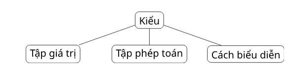
Như sơ đồ trên, một kiểu nói cho ta biết những giá trị nào tồn tại và những phép toán nào là có nghĩa. Số nguyên hỗ trợ phép số học, luận lý hỗ trợ phép logic, còn bản ghi hỗ trợ phép truy cập trường. Chính sự gắn bó giữa giá trị và phép toán, chứ không phải riêng kích thước lưu trữ, mới là tinh thần cốt lõi của khái niệm kiểu.
Vì sao ngôn ngữ lập trình cần kiểu
Kiểu phục vụ ba mục tiêu lớn, ứng với ba mức nhìn khác nhau về chương trình.
Thứ nhất là tổ chức khái niệm. Kiểu giúp người lập trình cấu trúc dữ liệu một cách có ý nghĩa, gắn tên với đúng phạm trù của nó:
int age;
float temperature;
bool isPassed;Thứ hai là phát hiện lỗi. Kiểu giúp phát hiện các phép toán không hợp lệ trước khi chúng gây hại. Một biểu thức như chia một chuỗi cho một số là vô nghĩa và bị xem là lỗi kiểu:
"hello" / 2 // lỗi kiểuThứ ba là hiện thực. Kiểu giúp trình biên dịch quyết định kích thước bộ nhớ, cách bố trí, và lệnh máy phù hợp:
int x; // thường 4 byte
double y; // thường 8 byteHệ thống kiểu
Tập hợp các quy tắc chi phối kiểu trong một ngôn ngữ được gọi là hệ thống kiểu (type system): một tập quy tắc gán kiểu cho các thành phần chương trình và kiểm soát cách các giá trị thuộc những kiểu khác nhau được sử dụng.
Một hệ thống kiểu thường quy định: các kiểu định sẵn của ngôn ngữ, cơ chế để định nghĩa kiểu mới, các ràng buộc trên phép toán, các quy tắc về tính tương thích kiểu, và thời điểm các lỗi kiểu được kiểm tra. Chẳng hạn, một câu hỏi tưởng đơn giản:
int x = 10;
float y = x; // có được phép không?không có câu trả lời tuyệt đối; nó phụ thuộc vào hệ thống kiểu của từng ngôn ngữ. Một số ngôn ngữ tự động chuyển int sang float, số khác đòi hỏi chuyển kiểu tường minh.
Nói ngắn gọn, hệ thống kiểu định nghĩa thế nào là một chương trình "đúng kiểu". Trong chương này, ta chưa đi sâu vào kiểm tra kiểu, suy diễn kiểu, tương đương kiểu hay đa hình; những nội dung đó dành cho chương về hệ thống kiểu. Ở đây ta chỉ cần ghi nhận rằng mọi thiết kế kiểu dưới đây đều nằm trong khuôn khổ các quy tắc do ngôn ngữ đặt ra.
Kiểu vô hướng và kiểu thứ tự
Một kiểu vô hướng (scalar type) biểu diễn các giá trị nguyên tử, không được cấu thành từ các thành phần nhỏ hơn. Dù bên trong một số kiểu vô hướng có cách biểu diễn phức tạp, ở mức ngôn ngữ chúng hành xử như những giá trị không thể chia tách.
Các kiểu vô hướng thường gặp gồm số nguyên, dấu chấm động, thập phân, luận lý, ký tự, liệt kê và miền con. Có thể nhóm chúng lại như sau:
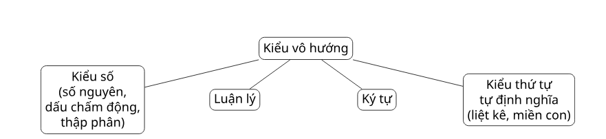
Kiểu số nguyên
Kiểu số nguyên biểu diễn các số nguyên. Nhiều ngôn ngữ cung cấp vài cỡ số nguyên khác nhau, ví dụ trong Java:
byte a;
short b;
int c;
long d;Phía sau vẻ đơn giản đó là một loạt câu hỏi thiết kế: ngôn ngữ hỗ trợ bao nhiêu cỡ số nguyên, có hỗ trợ số nguyên không dấu (unsigned integer) hay không, điều gì xảy ra khi tràn số (overflow), và số nguyên có cỡ cố định hay có độ chính xác tùy ý.
Câu hỏi về tràn số đặc biệt quan trọng. Xét đoạn mã C:
unsigned int x = 0;
x = x - 1;Sau phép trừ, x không âm như trực giác mong đợi mà trở thành giá trị không dấu lớn nhất (trên hệ 32 bit là 4294967295), do số nguyên không dấu được biểu diễn theo số học modulo và "quấn vòng" từ 0 xuống giá trị lớn nhất.
Để thấy rõ "các ngôn ngữ chọn khác nhau" cụ thể ra sao, bảng dưới đây tóm tắt cách các ngôn ngữ thực tế trả lời bốn câu hỏi thiết kế:
| Câu hỏi thiết kế | Cách các ngôn ngữ trả lời |
|---|---|
| Bao nhiêu cỡ số nguyên? | Java: byte 8 · short 16 · int 32 · long 64 bit, chọn theo miền giá trị cần. |
| Có số nguyên không dấu không? | C, C++, Rust có không dấu; Java bỏ qua, dùng kiểu có dấu rộng hơn thay thế. |
| Tràn số thì sao? | C không dấu quấn vòng (mod 2ⁿ); Java quấn vòng âm thầm; Python tự nâng lên số nguyên lớn; Rust dừng chương trình ở chế độ gỡ lỗi. |
| Cỡ cố định hay độ chính xác tùy ý? | C, Java dùng từ máy cỡ cố định (nhanh); Python, Haskell cho số nguyên lớn vô hạn (an toàn, chậm hơn). |
Kiểu dấu chấm động
Kiểu dấu chấm động (floating-point type) mô hình hóa các số thực, nhưng chỉ một cách xấp xỉ.
float x;
double y;Quanh kiểu này có vài khái niệm quan trọng: độ chính xác (precision), miền giá trị, làm tròn, và chuẩn biểu diễn IEEE 754. Một giá trị dấu chấm động theo chuẩn này được chia thành ba phần: bit dấu, các bit số mũ, và các bit phần định trị.
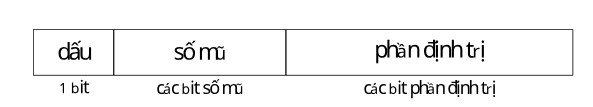
Vì chỉ xấp xỉ, dấu chấm động dẫn tới những kết quả ban đầu trông kỳ lạ. Ví dụ điển hình trong Python:
0.1 + 0.2 == 0.3 # có thể cho kết quả: FalseLý do là nhiều phân số thập phân không biểu diễn được chính xác trong hệ nhị phân, nên 0.1, 0.2 và 0.3 đều bị làm tròn, và tổng hai số đầu lệch một lượng cực nhỏ so với số thứ ba. Đây là lý do vì sao so sánh bằng giữa các kết quả dấu chấm động thường không đáng tin.
Để thấy cụ thể vì sao sai số xuất hiện, hãy mã hóa giá trị 3.6 theo một định dạng nhỏ kiểu IEEE 754, gồm 1 bit dấu, 3 bit số mũ và 5 bit phần định trị, với độ chệch (bias) là 2² − 1 = 3. Quá trình gồm năm bước:
Bước 1 — đổi sang nhị phân: 3.6 = 11.10011001...
Bước 2 — chuẩn hóa: = 1.110011001... × 2^1
Bước 3 — bit dấu: dương → 0
Bước 4 — số mũ (3 bit): 1 + bias(3) = 4 → 100
Bước 5 — phần định trị (5 bit): lấy 5 bit sau dấu chấm → 11001
Ghép lại: 0 100 11001
dấu mũ định trị → 0100110011001 1001..., nhưng ta chỉ giữ được 5 bit. Giá trị thực sự được lưu vì thế là 1.11001₂ × 2¹ = 11.1001₂ = 3.5625, lệch hẳn so với 3.6. Kiểu dấu chấm động được thiết kế cho miền giá trị rộng và hiệu năng cao, chứ không phải cho số học số thực chính xác tuyệt đối; đó là một đánh đổi cố hữu.
Kiểu thập phân, luận lý và ký tự
Ba kiểu vô hướng tiếp theo tuy quen thuộc nhưng vẫn cho thấy mỗi kiểu là một bộ ba gồm giá trị, phép toán và cách biểu diễn.
Kiểu thập phân (decimal type) được dùng khi cần biểu diễn thập phân chính xác, đặc biệt trong các ứng dụng tài chính. Trong C#:
decimal amount = 19.99m;Ưu điểm của kiểu thập phân là độ chính xác thập phân tốt hơn dấu chấm động; nhược điểm là miền giá trị hẹp hơn và chi phí lưu trữ cao hơn. Đây lại là một đánh đổi giữa độ chính xác và hiệu năng.
Kiểu luận lý (boolean type) biểu diễn các giá trị chân lý true và false, dùng trong điều kiện và các phép logic.
Kiểu ký tự (character type) biểu diễn các ký hiệu văn bản:
char c = 'A';Ký tự được lưu bằng các bảng mã số như ASCII hoặc Unicode; nói cách khác, một ký tự thực chất được biểu diễn bằng một mã số nguyên. Điểm chung của cả ba kiểu là: ngay cả những kiểu vô hướng đơn giản cũng kéo theo các lựa chọn thiết kế về giá trị, phép toán và cách biểu diễn.
Kiểu liệt kê
Kiểu liệt kê (enumeration type) định nghĩa một tập hữu hạn các giá trị có tên. Ví dụ trong C#:
enum Day {
Mon, Tue, Wed, Thu, Fri, Sat, Sun
}
Day today = Day.Mon;Lợi ích của kiểu liệt kê là làm chương trình dễ đọc hơn, giới hạn giá trị vào một tập có ý nghĩa, ngăn các phép gán không hợp lệ, và tránh việc biểu diễn khái niệm bằng những con số tùy tiện. Thay vì viết:
int color = 2; // 2 nghĩa là gì?người lập trình viết:
Color color = Red; // rõ nghĩa hơnCách thứ hai diễn đạt trực tiếp khái niệm miền vấn đề trong chương trình. Tên Red rõ nghĩa hơn hẳn con số 2, vốn buộc người đọc phải nhớ quy ước ngầm. Cần lưu ý rằng các ngôn ngữ khác nhau về việc giá trị liệt kê có tự động bị ép sang số nguyên hay không; ngôn ngữ càng nghiêm ngặt về điểm này thì càng an toàn nhưng kém linh hoạt hơn.
Kiểu miền con
Kiểu miền con (subrange type) là một tập con liên tục của một kiểu thứ tự. Ví dụ trong Pascal:
type Score = 0 .. 10;
type Index = 1 .. 100;Kiểu miền con hữu ích cho các chỉ số mảng, khoảng điểm, số tháng hợp lệ, hay các giá trị số nguyên bị chặn. Khi một phép gán vượt ra ngoài miền, đó là lỗi:
score := 15; // lỗi vượt miềnCó thể hình dung miền hợp lệ như một đoạn được tô đậm trên trục số, còn giá trị ngoài miền nằm ngoài đoạn đó:
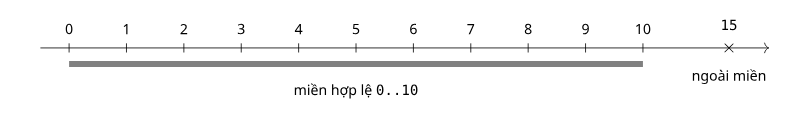
Giá trị của kiểu miền con là nó diễn đạt ràng buộc giá trị ngay trong hệ thống kiểu. Thay vì phải tự tay kiểm tra mọi giá trị, người lập trình để ngôn ngữ hoặc trình biên dịch chèn kiểm tra khi cần. Đây cũng là một biểu hiện cụ thể của ý tưởng từ Chương 7: ràng buộc một số quyết định càng sớm thì càng nhiều lỗi được phát hiện sớm.
Kiểu hợp thành
Kiểu hợp thành là gì
Một kiểu hợp thành (composite type) chứa nhiều thành phần có thể được truy cập riêng lẻ. Thay vì liệt kê các kiểu hợp thành một cách máy móc, sẽ sáng tỏ hơn nếu so sánh chúng theo một số chiều thiết kế chung:
| Chiều thiết kế | Câu hỏi thiết kế |
|---|---|
| Tính đồng nhất | Mọi thành phần có cùng kiểu không? |
| Cách truy cập | Bằng chỉ số, tên trường, khóa, hay con trỏ? |
| Kích thước | Cố định hay động? |
| An toàn | Truy cập có được kiểm tra không? |
| Biểu diễn | Giá trị được lưu trong bộ nhớ như thế nào? |
Soi qua các chiều này, các kiểu hợp thành tiêu biểu khác nhau rõ rệt: mảng thì đồng nhất và truy cập bằng chỉ số; bản ghi thì không đồng nhất và truy cập bằng tên trường; chuỗi là một dãy ký tự; kiểu hợp nhất dùng chung vùng nhớ với nhiều cách diễn giải; còn tập hợp là một bộ sưu tập không thứ tự các giá trị phân biệt.
Kiểu mảng
Một kiểu mảng (array type) là một bộ sưu tập các phần tử đồng nhất, mỗi phần tử được xác định bởi vị trí của nó. Ví dụ trong C:
int a[5] = {10, 20, 30, 40, 50};
a[0] // 10
a[3] // 40Có thể hình dung mảng như một dãy ô liền nhau, mỗi ô gắn với một chỉ số:
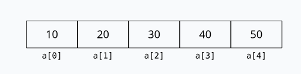
Mảng có một số đặc điểm chung: mọi phần tử cùng kiểu, được truy cập bằng chỉ số, thường được lưu liền nhau trong bộ nhớ, và việc lập chỉ số có thể được kiểm tra biên (bounds checking) hoặc không. Sức mạnh của mảng đến từ việc địa chỉ của một phần tử có thể tính trực tiếp từ địa chỉ cơ sở, chỉ số và kích thước phần tử.
Phân loại mảng theo thời điểm ràng buộc
Thiết kế mảng phụ thuộc vào thời điểm kích thước và vùng lưu trữ của nó được ràng buộc, nối trực tiếp với khái niệm thời điểm ràng buộc và các kiểu cấp phát đã học ở Chương 7.
| Loại mảng | Ví dụ | Ràng buộc kích thước | Ràng buộc lưu trữ |
|---|---|---|---|
| Tĩnh | int a[10] toàn cục | lúc biên dịch | trước khi chạy |
| Cố định trên ngăn xếp | int a[10] cục bộ | lúc biên dịch | lúc chạy |
| Động trên ngăn xếp | int a[n] cục bộ | lúc chạy | lúc chạy |
| Cố định trên heap | new int[10] | lúc chạy | lúc chạy |
| Động trên heap | vector / list | lúc chạy | lúc chạy |
Kiểu chuỗi
Một kiểu chuỗi (string type) là một dãy ký tự. Cùng một khái niệm này được các ngôn ngữ hiện thực rất khác nhau:
char name[] = "Alice"; // C
String name = "Alice"; // Java
name = "Alice" # PythonQuanh chuỗi có nhiều câu hỏi thiết kế: chuỗi là một kiểu nguyên thủy hay chỉ là một mảng ký tự, độ dài cố định hay động, chuỗi khả biến (mutable) hay bất biến (immutable), và những phép toán nào được hỗ trợ. Các phép toán điển hình trên chuỗi gồm gán, so sánh, ghép nối, lấy chuỗi con và so khớp mẫu.
Sự khác biệt trong hiện thực rất lớn. Trong C, chuỗi gắn chặt với mảng ký tự và người lập trình phải tự quản lý vùng nhớ cùng ký tự kết thúc. Trong Java và Python, chuỗi là các đối tượng mức cao có hỗ trợ lúc chạy, thường bất biến, và đi kèm một bộ mô tả lưu độ dài cùng địa chỉ.
Kiểu bản ghi
Một kiểu bản ghi (record type) là một kết hợp không đồng nhất, trong đó các thành phần được xác định bằng tên. Ví dụ trong C:
struct Student {
int id;
char name[50];
float gpa;
};
// Truy cập bằng tên trường:
s.id
s.name
s.gpaSo sánh mảng và bản ghi làm nổi bật sự khác biệt thiết kế giữa truy cập bằng chỉ số và truy cập bằng tên:
| Mảng | Bản ghi |
|---|---|
| Đồng nhất | Không đồng nhất |
| Truy cập bằng chỉ số | Truy cập bằng tên trường |
| Cùng một mẫu thao tác | Thao tác riêng theo trường |
| Chỉ số động | Độ dời trường cố định |
Khác với mảng, các thành phần của bản ghi có thể khác kiểu và được truy cập bằng tên thay vì chỉ số. Trong các ngôn ngữ hướng đối tượng, có thể xem đối tượng một phần như một bản ghi kèm phương thức và ngữ nghĩa bổ sung. Vị trí của mỗi trường thường được biết lúc biên dịch, nên truy cập trường có thể rất hiệu quả.
Kiểu hợp nhất
Một kiểu hợp nhất (union type) là một kiểu mà giá trị của nó có thể mang những kiểu khác nhau ở những thời điểm khác nhau, dùng chung một vùng lưu trữ. Ví dụ trong C:
union Data {
int i;
float f;
char c;
};Tại mỗi thời điểm chỉ một cách diễn giải là hợp lệ: cùng một vùng nhớ có thể được hiểu là int, float hay char.
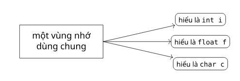
Điều này đặt ra một câu hỏi thiết kế then chốt: ngôn ngữ làm sao biết trường nào đang hợp lệ? Có hai cách tiếp cận. Hợp nhất tự do (free union) không có cơ chế an toàn kiểu sẵn có; người lập trình phải tự bảo đảm chỉ đọc đúng trường đã ghi. Hợp nhất có phân biệt (discriminated union) kèm thêm một thẻ phân biệt (tag) cho biết biến thể nào đang hoạt động.
Kiểu tập hợp và kiểu đệ quy
Hai kiểu hợp thành cuối cùng mở rộng khả năng biểu diễn theo hai hướng khác nhau.
Một kiểu tập hợp (set type) biểu diễn một bộ sưu tập không thứ tự các giá trị phân biệt. Ví dụ trong Pascal:
var s: set of 1..10;Các phép toán thường gặp trên tập hợp gồm kiểm tra thành viên, hợp, giao và hiệu, đúng theo tinh thần tập hợp trong toán học.
Một kiểu đệ quy (recursive type) chứa một tham chiếu tới một giá trị cùng kiểu với chính nó. Ví dụ kinh điển là nút của một danh sách liên kết:
struct Node {
int value;
struct Node* next;
};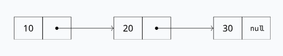
Kiểu đệ quy là điều kiện để biểu diễn các cấu trúc dữ liệu động như danh sách và cây. Đáng chú ý là một kiểu đệ quy hầu như luôn cần con trỏ hoặc tham chiếu ở trường tự trỏ; nếu không, một giá trị sẽ phải chứa chính nó vô hạn lần và không thể có kích thước hữu hạn.
Biểu diễn dữ liệu trong bộ nhớ
Vì sao biểu diễn quan trọng
Một kiểu không chỉ là một khái niệm toán học hay logic; nó còn phải được biểu diễn trong bộ nhớ. Cách biểu diễn dữ liệu (data representation) ảnh hưởng tới mức sử dụng bộ nhớ, tốc độ truy cập, khả năng kiểm tra an toàn, khả năng tương tác giữa các hệ thống, và mức tối ưu hóa mà trình biên dịch có thể thực hiện.
Ví dụ, với một khai báo tưởng đơn giản:
int a[100];trình biên dịch phải biết kích thước phần tử, địa chỉ cơ sở, miền chỉ số và quy tắc tính địa chỉ. Thiếu những thông tin kiểu này, việc sinh mã vừa hiệu quả vừa an toàn sẽ rất khó.
Biểu diễn của mảng
Một mảng một chiều thường được lưu trong các ô nhớ liền nhau. Với khai báo int a[5];, giả sử mỗi int chiếm 4 byte, các phần tử nằm kế tiếp nhau, địa chỉ tăng dần từ trái sang phải:
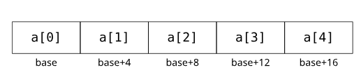
Nhờ bố trí liền nhau, địa chỉ của một phần tử bất kỳ tính được trực tiếp:
address(a[k]) = base_address + k × element_size
// Nếu biên dưới khác 0:
address(a[k]) = address(a[lower_bound]) + (k - lower_bound) × element_sizeCông thức này giải thích vì sao truy cập mảng hiệu quả: nếu biết kích thước phần tử và địa chỉ cơ sở, ta tính được địa chỉ của bất kỳ phần tử nào chỉ bằng một phép nhân và một phép cộng. Nói cách khác, lập chỉ số mảng được hiện thực bằng số học địa chỉ.
Với mảng nhiều chiều, bộ nhớ về bản chất là một dãy ô một chiều nên mảng nhiều chiều phải được tuyến tính hóa. Có hai cách phổ biến:
Thứ tự theo hàng (row-major order), dùng bởi các ngôn ngữ kiểu C, lưu lần lượt hết một hàng rồi mới sang hàng kế:
a[0][0], a[0][1], a[0][2],
a[1][0], a[1][1], a[1][2]Thứ tự theo cột (column-major order), dùng bởi Fortran, MATLAB và R, lưu lần lượt hết một cột rồi mới sang cột kế:
a[0][0], a[1][0], a[2][0],
a[0][1], a[1][1], a[2][1]Có thể hình dung hai cách duyệt qua một ma trận 3×3 như sau:
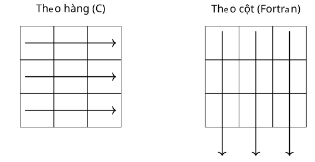
Mỗi cách lưu kéo theo một công thức tính địa chỉ riêng. Đặt B là địa chỉ cơ sở, w là kích thước một phần tử, Nₖ là số phần tử của chiều k. Với mảng n chiều, công thức tổng quát cho thứ tự theo hàng là:
// Thứ tự hàng:
addr(A[i₁]…[iₙ]) = B + w × offset
offset = Σ (iₖ − Lₖ) × (Nₖ₊₁ × … × Nₙ)
// Thứ tự cột:
offset = Σ (iₖ − Lₖ) × (N₁ × … × Nₖ₋₁)Ví dụ cụ thể với int A[2][3][4], B = 1000, w = 4, biên dưới = 0, truy cập A[1][0][2]:
// Thứ tự hàng:
offset = i₁·(N₂·N₃) + i₂·N₃ + i₃ = 1·(3·4) + 0·4 + 2 = 14
addr = 1000 + 4×14 = 1056
// Thứ tự cột:
offset = i₁ + i₂·N₁ + i₃·(N₁·N₂) = 1 + 0·2 + 2·(2·3) = 13
addr = 1000 + 4×13 = 1052Khi nói "mảng nhiều chiều", các ngôn ngữ thực ra cung cấp hai cơ chế khác nhau về biểu diễn. Mảng chữ nhật (rectangular array) là mảng hai chiều thực sự: mọi hàng cùng độ dài và được lưu trong một khối liền duy nhất. Mảng răng cưa (jagged array) thực chất là một mảng các tham chiếu tới hàng, mỗi hàng là một khối riêng và có thể dài ngắn khác nhau:
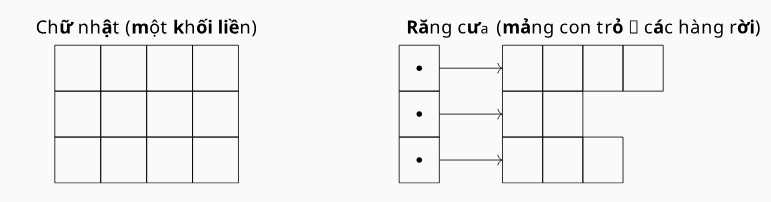
C dùng mảng chữ nhật (int m[3][4]), C# hỗ trợ cả hai (int[,] chữ nhật và int[][] răng cưa), còn Java chỉ có mảng răng cưa (int[][]). Đánh đổi rất rõ: mảng chữ nhật là một khối, số học chỉ số nhanh; mảng răng cưa linh hoạt về độ dài hàng nhưng tốn thêm một lần giải tham chiếu qua mảng con trỏ.
Để lưu các thuộc tính chỉ biết được lúc chạy, ngôn ngữ dùng bộ mô tả (descriptor): một cấu trúc dữ liệu chứa siêu dữ liệu cần thiết để quản lý một đối tượng lúc chạy.
| Khía cạnh | Bộ mô tả lúc biên dịch | Bộ mô tả lúc chạy |
|---|---|---|
| Dựng bởi | trình biên dịch, trước khi thực thi | lúc chạy, giữ trong bộ nhớ cùng đối tượng |
| Lưu trữ | dùng để sinh mã rồi bỏ đi | sống cạnh dữ liệu để mã đọc động |
| Chi phí | không tốn gì lúc chạy | thêm bộ nhớ và một mức gián tiếp |
| Dùng cho | mảng tĩnh, chuỗi độ dài cố định | mảng động, chuỗi co giãn |
Chuỗi, vốn là một dãy ký tự, được biểu diễn rất gần với mảng, và lựa chọn thiết kế trung tâm của chuỗi là độ dài có thể thay đổi tới đâu. Có ba chính sách:
| Chính sách độ dài | Mô tả | Ngôn ngữ | Biểu diễn |
|---|---|---|---|
| Tĩnh (static) | cố định khi tạo, bất biến | Python str, Java String | bộ mô tả lúc biên dịch |
| Động giới hạn (limited dynamic) | đổi được nhưng có trần cố định | C, C++ | bộ mô tả lúc chạy: đệm + độ dài hiện tại |
| Động (dynamic) | đổi tự do, không trần | Perl, JavaScript | bộ mô tả lúc chạy + lưu trữ liên kết |
Biểu diễn của bản ghi
Khác với mảng, một bản ghi được lưu như một dãy các trường có thể khác kiểu, mỗi trường đặt tại một độ dời (offset) cố định so với địa chỉ cơ sở. Xét:
struct Student {
int id;
char grade;
float gpa;
};Một bố trí khả dĩ:
độ dời 0: id
độ dời 4: grade
độ dời 8: gpa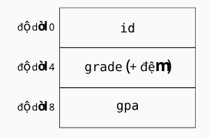
Trình biên dịch dùng các độ dời này để sinh mã. Một biểu thức như s.gpa được dịch thành "địa chỉ cơ sở của s cộng với độ dời của gpa". Như vậy, tên trường là thứ người lập trình dùng, còn mã sinh ra dùng độ dời.
Tuy nhiên, bố trí bản ghi không đơn giản là xếp các trường liền nhau, vì phần cứng đặt ra yêu cầu về căn lề dữ liệu (data alignment): đặt các đối tượng tại những địa chỉ thỏa mãn yêu cầu căn lề của phần cứng. Xét ví dụ:
struct Example {
char c;
int x;
char d;
};Giả sử char chiếm 1 byte với căn lề 1, còn int chiếm 4 byte với căn lề 4. Vì int x phải nằm tại địa chỉ là bội của 4, trình biên dịch chèn đệm (padding) sau c để đẩy x về độ dời 4:
độ dời 0 : c
độ dời 1–3 : đệm
độ dời 4–7 : x
độ dời 8 : d
độ dời 9–11 : đệm đuôi
sizeof(struct Example) = 12 // không phải 9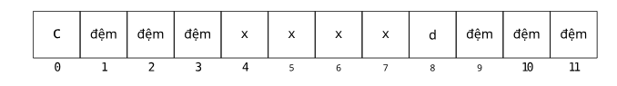
Một quy tắc quan trọng giải thích con số 12: kích thước của một bản ghi thường được làm tròn lên thành bội của yêu cầu căn lề lớn nhất trong các trường của nó. Ở đây căn lề lớn nhất là 4 (của int), nên kích thước phải là bội của 4, và 9 được làm tròn lên 12. Như vậy đệm có thể được chèn cả giữa các trường lẫn ở cuối bản ghi; phần đệm cuối này được gọi là đệm đuôi (tail padding).
Lý do của đệm đuôi trở nên rõ ràng khi ta đặt nhiều bản ghi liền nhau trong một mảng:
struct Example arr[2];Giả sử kích thước cấu trúc chỉ là 9 byte. Khi đó arr[0] bắt đầu ở độ dời 0, còn arr[1] bắt đầu ở độ dời 9. Nhưng 9 không phải bội của 4, nên trường int x bên trong arr[1] sẽ lệch căn lề. Bằng cách làm tròn kích thước lên 12, trình biên dịch bảo đảm arr[1] bắt đầu ở độ dời 12:
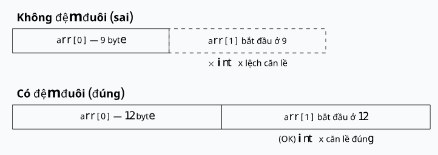
sizeof của một cấu trúc có thể lớn hơn tổng kích thước các trường của nó.
Con trỏ, tham chiếu và an toàn bộ nhớ
Kiểu con trỏ
Một con trỏ (pointer) là một giá trị lưu địa chỉ của một đối tượng khác. Con trỏ là kiểu dữ liệu gắn với việc truy cập gián tiếp. Ví dụ trong C:
int x = 10;
int *p = &x;Ở đây p lưu địa chỉ của x. Bản thân con trỏ cũng có vùng lưu trữ riêng, nhưng giá trị nó chứa là địa chỉ của một đối tượng khác:
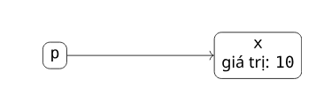
p lưu địa chỉ của biến x.Thao tác giải tham chiếu (dereferencing) đi theo địa chỉ để truy cập đối tượng được trỏ tới:
*p = 20; // làm thay đổi chính giá trị của xNhư vậy, con trỏ cho phép truy cập gián tiếp tới bộ nhớ; đây là nền tảng để xây các cấu trúc động như danh sách và cây, nhưng cũng là nguồn gốc của nhiều vấn đề an toàn.
Các phép toán trên con trỏ
Có hai phép toán cơ bản trên con trỏ, và việc tách bạch chúng rất quan trọng.
Phép thứ nhất là gán: con trỏ nhận một địa chỉ.
int *p;
p = &x;Phép thứ hai là giải tham chiếu: truy cập đối tượng nằm tại địa chỉ mà con trỏ đang giữ.
int x = 10;
int *p = &x;
int y = *p; // y = 10Số học con trỏ
Một số ngôn ngữ cho phép số học con trỏ (pointer arithmetic), tức cộng trừ trực tiếp trên giá trị con trỏ. Ví dụ trong C:
int a[5] = {10, 20, 30, 40, 50};
int *p = a;
*(p + 1) // 20
p[1] // 20 — cách viết khác của *(p + 1)
*(p + 10) // không an toàn — trỏ ra ngoài mảngKiểu tham chiếu
Một kiểu tham chiếu (reference type) là một bí danh cho một đối tượng đã tồn tại. Ví dụ trong C++:
int a = 10;
int& r = a;
r = 20; // a bằng 20Sau khi thực thi, a bằng 20, vì r chỉ là một tên khác cho cùng đối tượng mà a đặt tên. So sánh tham chiếu với con trỏ:
| Tham chiếu | Con trỏ |
|---|---|
| Trỏ tới một đối tượng | Lưu một địa chỉ |
| Thường không thể null | Có thể null |
| Không thể gắn lại đối tượng khác | Có thể trỏ nơi khác |
| Truy cập ngầm | Giải tham chiếu tường minh |
| Trừu tượng an toàn hơn | Điều khiển mức thấp hơn |
Tham chiếu thường an toàn hơn con trỏ vì nó loại bỏ một số thao tác nguy hiểm như giá trị null, gắn lại, hay số học con trỏ. Tuy nhiên, ngữ nghĩa chính xác của tham chiếu khác nhau giữa các ngôn ngữ.
Con trỏ treo
Truy cập gián tiếp mở ra hai lỗi an toàn bộ nhớ kinh điển. Lỗi thứ nhất là con trỏ treo (dangling pointer): một con trỏ trỏ tới một đối tượng đã được giải phóng.
int *p = malloc(sizeof(int));
int *q = p;
free(p);
*q = 10; // con trỏ treo!Diễn biến của lỗi này là: p và q cùng trỏ tới một đối tượng trên heap; free(p) giải phóng đối tượng đó; nhưng q vẫn giữ địa chỉ cũ, nên việc dùng q là không an toàn.
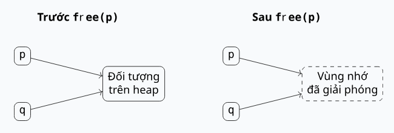
free(p) hủy đối tượng nhưng q vẫn trỏ tới vùng nhớ đó.Biến heap động bị mất
Lỗi đối nghịch với con trỏ treo là biến heap động bị mất (lost heap-dynamic variable): một đối tượng đã cấp phát nhưng không còn cách nào truy cập được từ chương trình.
int *p = malloc(sizeof(int));
p = NULL; // rò rỉ bộ nhớ!Diễn biến: một đối tượng trên heap đã được cấp phát; p là tham chiếu duy nhất tới nó; p bị đổi thành NULL; và chương trình không còn cách nào truy cập đối tượng đó nữa.
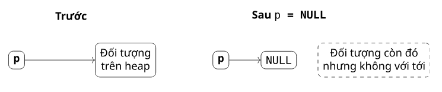
Đối tượng vẫn còn tồn tại nhưng đã trở nên không thể với tới; đây cũng chính là hiện tượng rò rỉ bộ nhớ đã nêu ở Chương 7.
So sánh con trỏ treo và rò rỉ bộ nhớ
Đặt cạnh nhau, hai lỗi này là hai mặt đối nghịch của cùng một vấn đề: sự mất đồng bộ giữa đối tượng và tham chiếu.
| Vấn đề | Trạng thái đối tượng | Trạng thái tham chiếu | Rủi ro chính |
|---|---|---|---|
| Con trỏ treo | đã bị hủy | vẫn còn | truy cập vùng nhớ không hợp lệ |
| Rò rỉ bộ nhớ | vẫn còn | đã mất | lãng phí bộ nhớ |
Rò rỉ bộ nhớ: đối tượng còn, tham chiếu mất.
Sự đối nghịch này chuẩn bị nền cho các chủ đề về sau như thu gom rác, sở hữu và mượn trong các ngôn ngữ thiết kế theo hướng an toàn bộ nhớ: mọi cơ chế đó đều cố giải đồng thời hai bài toán, vừa không hủy một đối tượng còn được tham chiếu, vừa không giữ lại một đối tượng không còn ai tham chiếu.
Con trỏ và tham chiếu: đánh đổi thiết kế
Cuối cùng, việc một ngôn ngữ chọn hỗ trợ con trỏ, tham chiếu hay cả hai là một quyết định thiết kế cân giữa điều khiển mức thấp và an toàn.
| Đặc điểm | Con trỏ | Tham chiếu |
|---|---|---|
| Truy cập gián tiếp | Có | Có |
| Có thể null | Thường có | Thường không |
| Có thể gắn lại | Có | Thường không |
| Số học con trỏ | Có trong C/C++ | Không |
| Rủi ro an toàn bộ nhớ | Cao hơn | Thấp hơn |
| Tính linh hoạt | Cao hơn | Thấp hơn |
Các ngôn ngữ chọn khác nhau dọc theo trục đánh đổi này: C chỉ có con trỏ; C++ có cả con trỏ lẫn tham chiếu; Java chỉ có tham chiếu, không có con trỏ thô; C# có tham chiếu kèm con trỏ không an toàn bị hạn chế. Mỗi lựa chọn phản ánh một mức cân bằng khác nhau: phơi bày càng nhiều điều khiển mức thấp thì càng linh hoạt và hiệu quả, nhưng càng đặt gánh nặng an toàn lên vai người lập trình.
Tổng kết chương
Chương này đã đi từ định nghĩa của một kiểu dữ liệu đến cách kiểu được biểu diễn trong bộ nhớ và những vấn đề an toàn đi kèm. Một kiểu dữ liệu được xác định bởi ba thành phần gắn bó: tập giá trị, tập phép toán và cách biểu diễn. Kiểu phục vụ ba mục tiêu là tổ chức khái niệm, phát hiện lỗi và hỗ trợ hiện thực, tất cả nằm trong khuôn khổ các quy tắc của hệ thống kiểu.
Ta đã phân biệt các kiểu vô hướng như số nguyên, dấu chấm động, thập phân, luận lý, ký tự, cùng các kiểu thứ tự tự định nghĩa là liệt kê và miền con, và thấy rằng ngay cả những kiểu đơn giản nhất cũng kéo theo các lựa chọn thiết kế về tràn số, độ chính xác và bảng mã. Sang các kiểu hợp thành, ta so sánh mảng, chuỗi, bản ghi, hợp nhất, tập hợp và kiểu đệ quy theo những chiều thiết kế chung như tính đồng nhất, cách truy cập, kích thước và an toàn.
Phần biểu diễn trong bộ nhớ tách thành hai mảng lớn là biểu diễn của mảng và biểu diễn của bản ghi. Với mảng, lập chỉ số là số học địa chỉ, mảng nhiều chiều được tuyến tính hóa theo hàng hoặc theo cột với công thức địa chỉ tương ứng, các ngôn ngữ khác nhau về cách khởi tạo cũng như giữa mảng chữ nhật và mảng răng cưa, và bộ mô tả lưu siêu dữ liệu cần đến lúc chạy, vốn cũng chi phối ba chính sách độ dài chuỗi. Với bản ghi, các trường được truy cập qua những độ dời cố định kèm căn lề, đệm và đệm đuôi để bảo toàn căn lề cả trong mảng bản ghi. Cuối cùng, con trỏ và tham chiếu cho phép truy cập gián tiếp với những mức an toàn khác nhau, và hai lỗi đối nghịch là con trỏ treo và rò rỉ bộ nhớ nhắc lại đúng những vấn đề về tham chiếu và thời gian sống từ Chương 7.
Thông điệp xuyên suốt là: kiểu dữ liệu không chỉ nói về giá trị. Chúng còn quyết định cách dữ liệu được tổ chức, truy cập, kiểm tra và biểu diễn trong bộ nhớ, nối liền các khái niệm lập trình mức cao với phần hiện thực mức thấp. Những hiểu biết này là nền tảng cho các chương về sau như hệ thống kiểu, kiểm tra kiểu và thiết kế ngôn ngữ an toàn bộ nhớ.